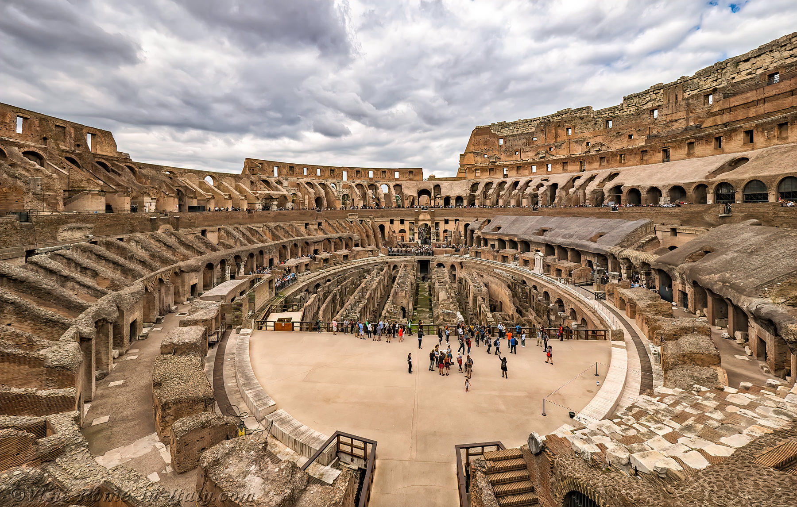
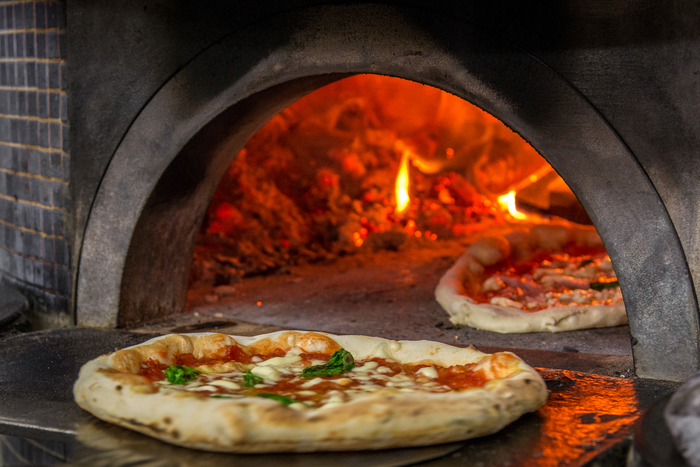
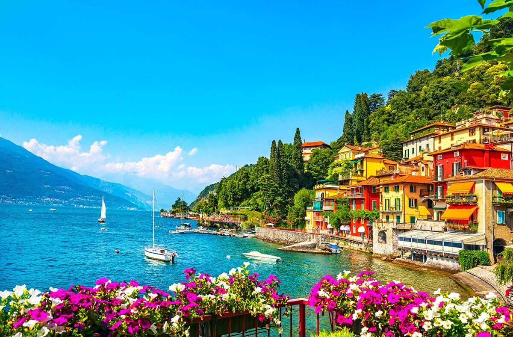

Italia es el país con más sitios declarados Patrimonio de la Humanidad. Esto se debe a su enorme riqueza histórica, artística y cultural acumulada durante miles de años. Civilizaciones como los romanos, etruscos y renacentistas dejaron monumentos, ciudades y obras arquitectónicas que todavía se conservan.
Entre los lugares más famosos se encuentran el Coliseo de Roma, la Torre de Pisa, los canales de Venecia y el centro histórico de Florencia. Estos lugares atraen millones de turistas cada año y representan diferentes momentos de la historia europea.
Además de monumentos, Italia también tiene paisajes naturales protegidos, como las Dolomitas, que también forman parte del patrimonio mundial debido a su belleza y valor geológico.


La pizza moderna se originó en Nápoles durante el siglo XVIII, cuando era un alimento sencillo consumido principalmente por las clases trabajadoras. Los panaderos comenzaron a agregar ingredientes como tomate, aceite de oliva y queso sobre una base de masa horneada.
La famosa Pizza Margherita fue creada en 1889 por el pizzero Raffaele Esposito. Se dice que la preparó en honor a la reina Margherita de Saboya, utilizando tomate rojo, mozzarella blanca y albahaca verde, representando los colores de la bandera italiana.
Con el tiempo, la pizza napolitana se volvió famosa en todo el mundo y hoy es uno de los platillos más populares del planeta. Incluso la pizza napolitana tradicional fue reconocida por la UNESCO como patrimonio cultural inmaterial.
Durante muchos siglos, el territorio italiano estuvo dividido en varios reinos, ducados y estados independientes, como el Reino de Nápoles, el Reino de Cerdeña y los Estados Pontificios. Cada región tenía su propio gobierno, leyes e incluso influencias extranjeras.
En el siglo XIX comenzó un movimiento político y social llamado Risorgimento, cuyo objetivo era unificar todos estos territorios en un solo país. Líderes como Giuseppe Garibaldi, Camillo Benso di Cavour y el rey Victor Emmanuel II jugaron un papel fundamental en este proceso.
Finalmente, en 1861 se proclamó el Reino de Italia, marcando el nacimiento del país moderno. Aunque Roma no se convirtió en la capital oficial hasta 1871, cuando fue incorporada al nuevo estado italiano.
